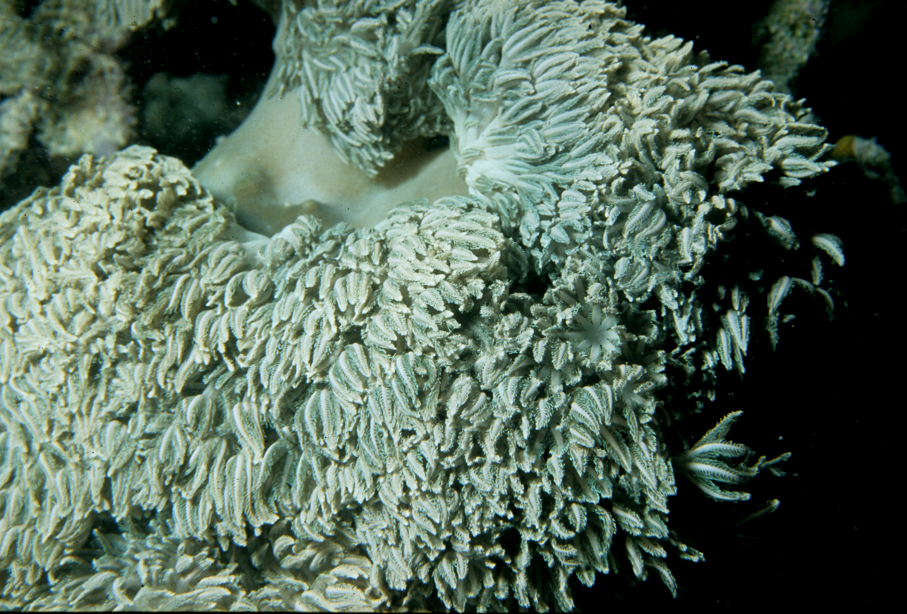

Climate Change
One of the main causes for impacts is climate change. Rising air and water temperatures, changing conditions and extreme weather can cause some of the follow effects:
- Glaciers retreating, this is caused by rising temperatures
- Biodiversity shifts, this disrupts the various ecosystems and vegetation, as it could be too hot making it harder for it to survive, this also affects the native species.
- Ocean acidfication, caused by the ocean absobing excess carbon dioxide. This impacts marine life, particually species which rely on calcium cabonate (creatures with shells and coral) as the acidifcation affects the avalibility of the calcium. Another affect is on smaller organisms (including plankton), with further impacts the food web and larger species, marine animals also spend more energy to neutralize the affect of the acidifcation.

Unsplash, Jordan Heath

Unsplash, NOAA